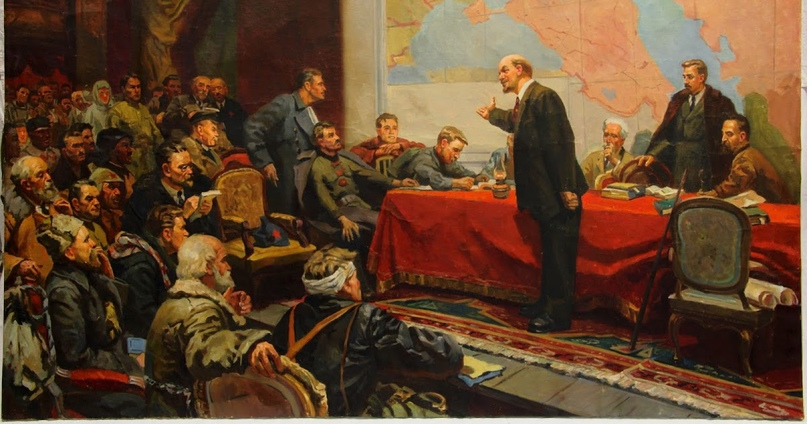

Владимир Ильич Ленин “Наша программа”
Международная социал-демократия переживает в настоящее время шатание мысли. До сих пор учения Маркса и Энгельса считались прочным основанием революционной теории, — теперь раздаются отовсюду голоса о недостаточности этих учений и устарелости их. Кто объявляет себя социал-демократом и намерен выступить с социал-демократическим органом, должен с точностью определить свое отношение к вопросу, волнующему далеко не одних только германских социал-демократов.
Мы стоим всецело на почве теории Маркса: она впервые превратила социализм из утопии в науку, установила твердые основания этой науки и наметила путь, по которому должно идти, развивая дальше эту науку и разрабатывая ее во всех частностях. Она раскрыла сущность современного капиталистического хозяйства, объяснив, каким образом наем рабочего, купля рабочей силы, прикрывает порабощение миллионов неимущего народа кучке капиталистов, владельцев земли, фабрик, рудников и пр. Она показала, как все развитие современного капитализма клонится к вытеснению мелкого производства крупным, создает условия, делающие возможным и необходимым социалистическое устройство общества. Она научила видеть под покровом укоренившихся обычаев, политических интриг, мудреных законов, хитросплетенных учений — классовую борьбу, борьбу между всяческими видами имущих классов с массой неимущих, с пролетариатом, который стоит во главе всех неимущих. Она выяснила настоящую задачу революционной социалистической партии: не сочинение планов переустройства общества, не проповедь капиталистам и их прихвостням об улучшении положения рабочих, не устройство заговоров, а организацию классовой борьбы пролетариата и руководство этой борьбой, конечная цель которой — завоевание политической власти пролетариатом и организация социалистического общества.
И мы спрашиваем теперь: что же внесли нового в эту теорию те громогласные «обновители» ее, которые подняли в наше время такой шум, группируясь около немецкого социалиста Бернштейна? Ровно ничего: они не подвинули ни на шаг вперед той науки, которую завещали нам развивать Маркс и Энгельс; они не научили пролетариат никаким новым приемам борьбы; они только пятились назад, перенимая обрывки отсталых теорий и проповедуя пролетариату не теорию борьбы, а теорию уступчивости — уступчивости по отношению к злейшим врагам пролетариата, к правительствам и буржуазным партиям, которые не устают изыскивать новые средства для травли социалистов. Один из основателей и вождей русской социал-демократии, Плеханов, был вполне прав, когда подверг беспощадной критике новейшую «критику» Бернштейна, от взглядов которого отреклись теперь и представители германских рабочих (на съезде в Ганновере).
Мы знаем, что на нас посыплется за эти слова куча обвинений: закричат, что мы хотим превратить социалистическую партию в орден «правоверных», преследующих «еретиков» за отступление от «догмы», за всякое самостоятельное мнение и пр. Знаем мы все эти модные хлесткие фразы. Только нет в них ни капли правды и ни капли смысла. Крепкой социалистической партии не может быть, если нет революционной теории, которая объединяет всех социалистов, из которой они почерпают все свои убеждения, которую они применяют к своим приемам борьбы и способам деятельности; защищать такую теорию, которую по своему крайнему разумению считаешь истинной, от неосновательных нападений и от попыток ухудшить ее — вовсе еще не значит быть врагом всякой критики. Мы вовсе не смотрим на теорию Маркса как на нечто законченное и неприкосновенное; мы убеждены, напротив, что она положила только краеугольные камни той науки, которую социалисты должны двигать дальше во всех направлениях, если они не хотят отстать от жизни. Мы думаем, что для русских социалистов особенно необходима самостоятельная разработка теории Маркса, ибо эта теория дает лишь общие руководящие положения, которые применяются в частности к Англии иначе, чем к Франции, к Франции иначе, чем к Германии, к Германии иначе, чем к России. Поэтому мы охотно будем уделять место в нашей газете статьям по теоретическим вопросам и приглашаем всех товарищей к открытому обсуждению спорных пунктов.

Каковы же главные вопросы, возникающие при применении к России программы, общей всем социал-демократам? Мы сказали уже, что суть этой программы состоит в организации классовой борьбы пролетариата и в руководстве этой борьбой, конечная цель которой — завоевание политической власти пролетариатом и устройство социалистического общества. Классовая борьба пролетариата разделяется на экономическую борьбу (борьбу против отдельных капиталистов или против отдельных групп капиталистов за улучшение положения рабочих) и на политическую борьбу (борьбу против правительства за расширение прав народа, т. е. за демократию, и за расширение политической власти пролетариата). Некоторые русские социал-демократы (к числу их, по-видимому, принадлежат те, которые ведут газету «Рабочая Мысль») считают несравненно более важной экономическую борьбу, политическую же чуть ли не откладывают до более или менее отдаленного будущего. Такое мнение совершенно неверно. Все социал-демократы согласны в том, что необходимо организовать экономическую борьбу рабочего класса, что необходимо вести агитацию среди рабочих на этой почве, т. е. помогать рабочим в их ежедневной борьбе с хозяевами, обращать их внимание на все виды и случаи притеснений и разъяснять им таким образом необходимость объединения. Но из-за экономической борьбы забывать политическую — значило бы отступать от основного положения всемирной социал-демократии, значило бы забывать то, чему учит вся история рабочего движения. Завзятые сторонники буржуазии и служащего ей правительства не раз пытались даже организовать чисто экономические союзы рабочих и отвлечь их таким образом от «политики», от социализма. Очень возможно, что и русское правительство сумеет предпринять что-либо подобное, ибо оно всегда старалось бросать народу грошовые подачки или, вернее, лжеподачки, лишь бы отвлечь его от мысли о его бесправии и его угнетении. Никакая экономическая борьба не может принести рабочим прочного улучшения, не может даже вестись в широких размерах, если рабочие не будут иметь право свободно устраивать собрания, союзы, иметь свои газеты, посылать своих представителей в народные собрания, как это делают рабочие Германии и всех других европейских стран (кроме Турции и России). А чтобы добиться этих прав, надо вести политическую борьбу. В России не только рабочие, но и все граждане лишены политических прав. Россия — монархия самодержавная, неограниченная. Царь, один издает законы, назначает чиновников и надзирает за ними. От этого кажется, что в России царь и царское правительство не зависит ни от каких классов и заботится о всех одинаково. А на деле все чиновники берутся только из класса собственников и все подчинены влиянию крупных капиталистов, которые веревки вьют из министров и добиваются всего, чего хотят. На русском рабочем классе лежит двойной гнет: его обирают и грабят капиталисты и помещики, а чтобы он не мог бороться против них, его связывает по рукам и по ногам полиция, затыкая ему рот, преследуя всякую попытку отстоять права народа. Всякая стачка против капиталиста ведет к тому, что на рабочих напускают войско и полицию. Всякая экономическая борьба необходимо превращается в политическую, и социал-демократия должна неразрывно связать и ту и другую в единую классовую борьбу пролетариата. Первой и главной целью такой борьбы должно быть завоевание политических прав, завоевание политической свободы. Если одни петербургские рабочие, при небольшой помощи социалистов, сумели быстро добиться от правительства уступки — издания закона о сокращении рабочего дня, то весь русский рабочий класс, руководимый одной «Российской социал-демократической рабочей партией», сумеет добиться упорной борьбой и несравненно более важных уступок.
Русский рабочий класс сумеет и один вести свою экономическую и политическую борьбу, даже если бы он не получал помощи ни от какого другого класса. Но в политической борьбе рабочие не стоят одиноко. Полное бесправие народа и дикий произвол башибузуков-чиновников возмущают и всех сколько-нибудь честных образованных людей, которые не могут помириться с травлей всякого свободного слова и свободной мысли, возмущают преследуемых поляков, финляндцев, евреев, русских сектантов, возмущают мелких купцов, промышленников, крестьян, которым не у кого искать защиты от притеснений чиновников и полиции. Все эти группы населения, взятые отдельно, неспособны к упорной политической борьбе, но когда рабочий класс поднимет знамя такой борьбы, — ему отовсюду протянут руку помощи. Русская социал-демократия встанет во главе всех борцов за права народа, всех борцов за демократию, и тогда она станет непобедимой!
Таковы наши основные воззрения, которые мы будем систематически и всесторонне развивать в нашей газете. Мы убеждены, что таким образом мы будем идти по пути, намеченному «Российской социал-демократической рабочей партией» в изданном ею «Манифесте».
Владимир Ильич Ленин
Полное собрание сочинений, том 4 страницы 182—186.